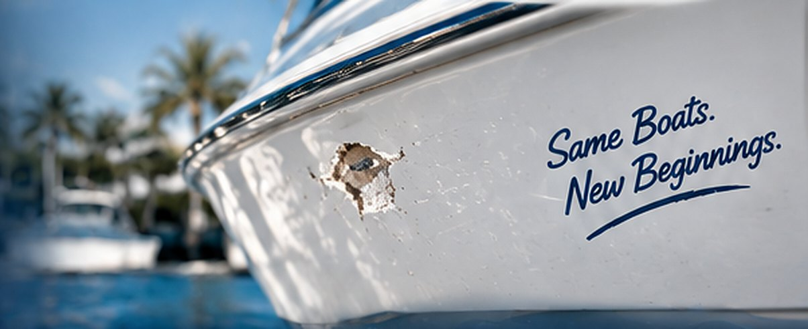

Professional gelcoat chip repair to restore your boat’s finish, prevent water intrusion, and keep it looking like new. We repair small chips, nicks, and edge damage with expert color matching and seamless results.
Gelcoat chips and nicks are common from dock rash, trailering, dropped equipment, or everyday use. Even small chips can expose the fiberglass to UV rays and water, leading to oxidation and more expensive repairs later. We professionally repair chips and nicks with precise color matching so your boat looks seamless again and stays protected.
We use proven marine repair techniques and high-quality materials to ensure a seamless, long-lasting finish.
We evaluate the chip size, depth and location to determine the best repair method.
Clean, sand and feather the area for proper adhesion and a smooth transition.
Fill with marine-grade gelcoat, match the exact color, and level the surface.
Wet sand and polish for a smooth, glossy, like-new finish that blends seamlessly.
See real examples of small chip and nick repairs we’ve completed for boaters across Tampa Bay.


With over 50 years of fiberglass repair experience, we deliver high-quality results that keep your boat looking its best. From small chips to full cosmetic restorations, we’re the team boaters across Tampa Bay trust.
It depends on the size, depth and number of chips, where they are on the boat, and how closely the color has to be matched. Send us a few photos through the form below or call 727-391-7639 and we’ll give you a free quote.
The goal is a repair you can’t find. We tint the gelcoat to your boat, then sand and polish it flush so it blends into the surrounding finish. Heavily faded or oxidized gelcoat can make a perfect match harder — we’ll tell you up front what to expect.
Most small chips and nicks are handled in a single visit. Gelcoat needs time to cure before it’s sanded and polished, so larger or multiple chips can take longer — we give you a timeline with your quote.
Yes. We match against the finish around the chip rather than the original factory color, because gelcoat shifts as it ages in the Florida sun. The tint is adjusted until it blends before we apply it.
Yes. Even a small chip exposes the fiberglass underneath, and water and UV go to work on it straight away. Sealing it now stops it spreading, and costs far less than repairing the damage it leads to later.
Ready to repair those chips?
Let Captain Levi’s inspect the damage and recommend the right repair.
Got a small chip or nick you want looked at, need a quote, or ready to schedule? Fill out the form or give us a call — we’ll get back to you as soon as possible. Your boat deserves the best, and we’re here to make it happen.
Tell us a little about your project and we’ll get back to you quickly.